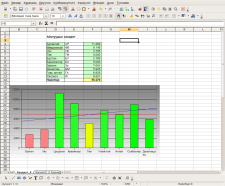

ТООЦООЛОГЧБүх төрлийн хүснэгтэн боловсруулалтТООЦООЛОГЧ нь таны хүссэн хүснэгтэн мэдээлэл боловсруулалтыг хийнэ. Эхлэгчидийн хувьд ТООЦООЛОГЧ нь сурахад хялбар, зөнгөөрөө ажиллах боломжтой. Мэргэжилийн өгөгдөл боловсруулагч, тооны илбэчид олон тооны мэргэжилийн функцүүдэд нь баярлах болно.  Мэргэжлийн Залуурт хүснэгт-технолог нь янз бүрийн өгөгдлийн сангаас түүхий өгөгдөл салгаж аваад тэдгээрийг хүснэгт хэлбэрээр эмхлэн авч өөрийн хэрэгцээнд тохируулан дүрслэх боломжийг олгоно. Тооцоологч нь гүнзгийрүүлсэн судалгаа шинжилгээ хийх , шийдвэр гаргах хэрэгсэл ашиглан хүснэгтээс үр дүн гаргах болон диаграмм зохиож чадна. Тооцоологч нь санхүү, статистик ба математикийн үйлдлүүд болон өөр бусад 300 гаруй функцуудыг агуулна. Залуурчид таныг олон тооны хүснэгтэн боловсруулалтын функцээс сонгоход чиглүүлж өгнө. Автомат хэлбэржүүлэлт нь таны бичсэн бичвэрийн хэлбэржүүлэлтийг хийж таныг бичвэрийнхээ агуулгад анхаарлаа төвлөрүүлэх боломж олгоно. Та баримтуудаа ОпенДокумент (OpenDocument) форматаар хадгалах хэрэгтэй. Учир нь энэ формат албан баримтын олон улсын шинэ стандарт билээ. Энэ XML-д суурилсан формат нь зөвхөн ТООЦООЛОГЧ-той холбоотой бус та бусад бүх ОпенДокумент форматтай нийцтэй програм хангамжуудаар хандах боломжтой болох юм. Тооцоологчоор Microsoft Excel -ийн файл нээж ажиллах боломжтой бөгөөд Excel форматаар нь хадгалах боломжтой. Хүснэгтийг PDF болон HTML ээр экспортлоно. |
{kind=link}